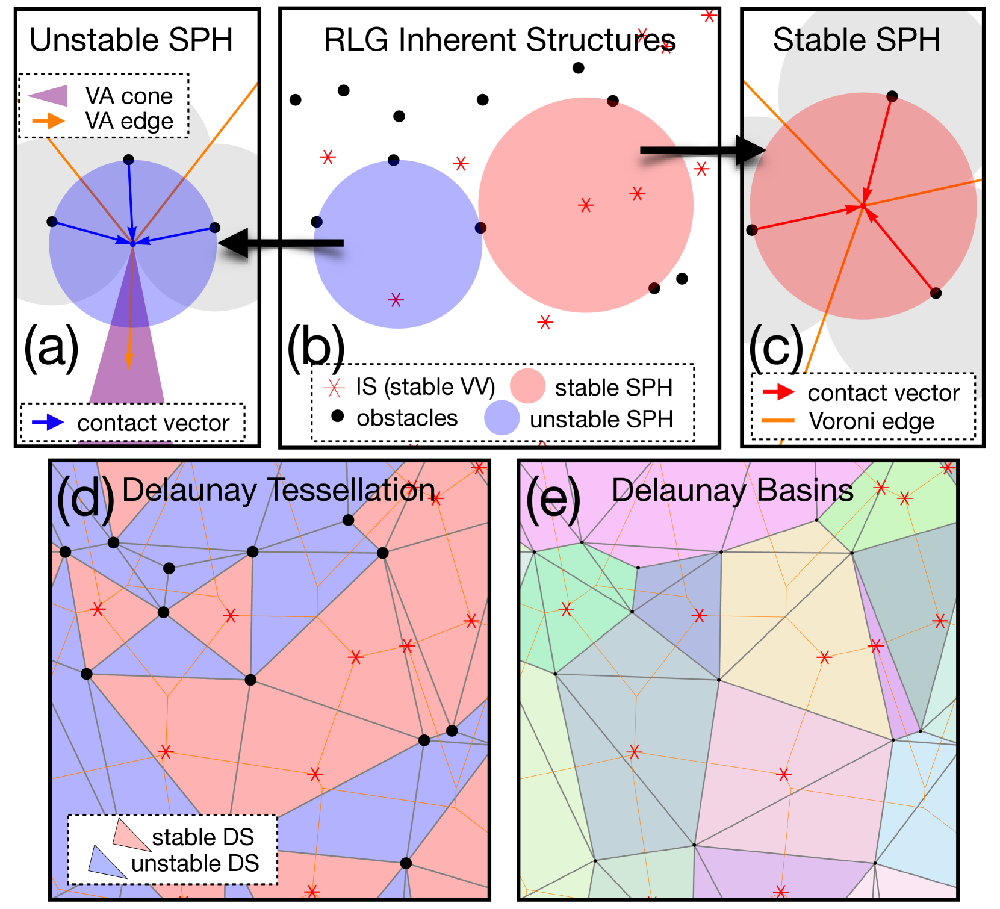

Random cages formed by hard spheres encode how local confinement evolves toward jamming. This work develops a minimal infinite-dimensional model and tests its finite-dimensional behavior, clarifying which geometric features survive across dimensions and how they place jamming algorithms in a common universality class.
